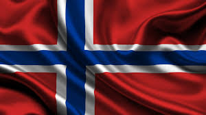

On this page I could talk about anything. So I decided to talk about Norge (Norway). I lived there for 4 years and moved there when I was 11 years old. Norway is in Europe and it is by Sweden. Most people
don't even know about Norway and what language they speak. In Norway the speak Norsk (Norwegian).
Now that is done I will talk more aboout Norge and its history and terrain. Norway
was had a lot of Vikings during that time period. In 1523 Norway was part of Danmark-Norge (Denmark-Norway) that was when Denmark and Norway was in a Union. Going ahead a few years to the year of 1814 that was the
time of Den svenks-norsk union (Sweden-Norway) Sweden and Norway became united. Skipping a head a couple of years to the year of 1905 Syttende mai (17 May). Norway finally gained its indapendec.
This day is celabrated every year and is called Syttende mai (17 May) and Nasjonaldagen (The National Day).
Now that the history is done the Geography of Norway is fjellene (mountains), skoger (forest), fjorder (fjords), and a couple places have isbreer (glaciers).
| Places I have been | Places you should visit |
|---|---|
| Trondheim | Norway |
| Arctic Circle(May) | Arctic Circle(Anytime if you like snow go in May or in the winter.) |
| Oslo(Capital) | Oslo(Capital) |
| Kristiansand |